1 準備
- GoogleColab にログインしておいてください。
2 前回の復習: Python環境の構築 (⌛目標時間: 15分)
前回講義で学んだ「ローカル開発環境の構築」について復習します。
操作上の不明箇所があれば、まずは前回の 第09回講義資料 を参照してください。
プロンプト例
Pythonのプログラミングの授業で、先生から「Pythonの仮想環境」をつくって作業してくださいと指示がありました。仮想環境って何ですか？あと、それを使うと何が嬉しいのですか？
2.0.1 手順1
ドキュメンフォルダ (あるいは C:\Projects) に作成した
2026-Programming1 のなかに PG1-10 という
フォルダを新規作成 してください
- フォルダの位置と名前は、各自の環境に合わせて変更してください。
- 特に
OneDriveでドキュメントフォルダを同期しているとき、その配下に仮想環境を構築すると様々な問題が発生します。仮想環境を作成した際には
数百から数千のファイルが作成されますが、OneDrive
同期していると、それも同期処理 (クラウド転送) されること になります。OneDrive
の容量も圧迫し、通信回線も圧迫します。
- 個人的には、ドキュメントやデスクトップの OneDrive で同期は推奨しません。
プロンプト例
Pythonの開発環境 (仮想環境) の構築の話です。OneDrive 同期しているドキュメントフォルダなのかで仮想環境を構築するのは良くない、と言われたのですが、どういうことですか？
2.0.2 手順2
作成したフォルダが「プロジェクトルート」になるように VSCode
で開いてください。具体的には、エクスプローラで PG1-10
フォルダを選択して、Shift
を押下しながらフォルダを右クリックして「Codeで開く」を選択してください。
- 前回講義で、VSCode のインストールに際して右クリックメニューに項目追加をしていなかった場合は、VSCode
のメニューから「ファイル」-「フォルダを開く」を選択して
PG1-10を選択してください。
注意：プロジェクトルートの確認
VSCode でフォルダを開いたときは、必ず、そのトップフォルダ (プロジェクトのルートフォルダ)
の位置を確認してください。現在の場合であれば、以下のように PG1-10
がプロジェクトルートになっている必要があります。
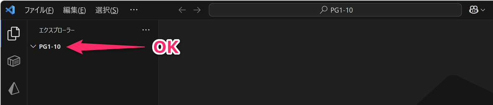
プロジェクトルートが 2026-Programming1 など、PG1-10
以外の場合、以下の手順で進めると全て不適切な処理
となります。十分に注意してください。
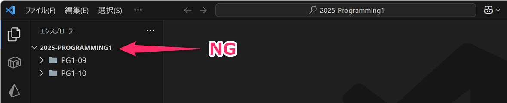
適切にプロジェクトフォルダを開けていない場合は、VSCode を閉じて、上記に示す方法で開きなおしてください。
右クリックメニューに「Codeで開く」を設定したい
Visual Studio Code Installer (System Installer x64)
VSCodeSetup-x64-1.125.1.exe を再度ダウンロード (入手先)
して実行し、以下のように再設定してください (事前にアンインストールする必要はありません)。
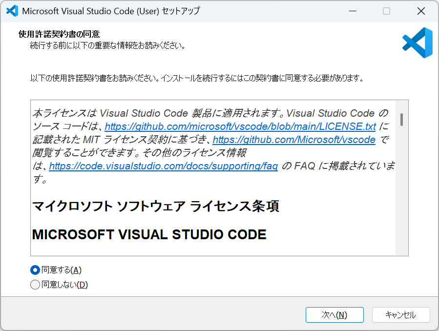
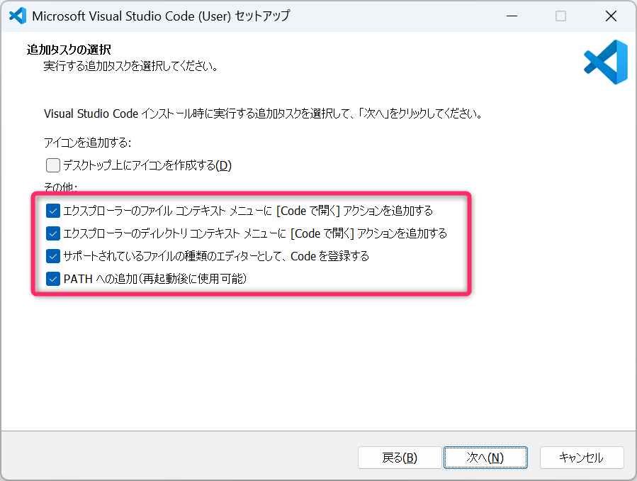
2.0.3 手順3
VS Code 内で Ctrl + j でターミナル
(PowerShell:pwsh) を起動してください。
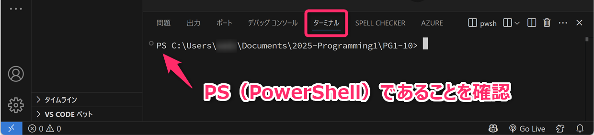
次のコマンドを入力して、Pythonの仮想環境を作成し、その仮想環境を 有効化 してください。
PS C:\***\PG1-10 > python -m venv .venv
PS C:\***\PG1-10 > .venv/Scripts/Activate.ps1注意
python -m venv .venv
を実行した際に、まれに次のようなエラーが表示されることがあります。
**kwargs).stdout
^^^^^^^^^
File "C:\Users\xxxx\AppData\Local\Programs\Python\Python313\Lib\subprocess.py", line 556, in run
stdout, stderr = process.communicate(input, timeout=timeout)
~~~~~~~~~~~~~~~~~~~^^^^^^^^^^^^^^^^^^^^^^^^
File "C:\Users\xxxx\AppData\Local\Programs\Python\Python313\Lib\subprocess.py", line 1209, in communicate
stdout = self.stdout.read()
KeyboardInterruptこのエラーが表示された場合は、もう一度、python -m venv .venv
を実行してください。
2回目の実行で問題なく完了すれば、そのまま進めてかまいません。
このエラーは、仮想環境を作成する途中で、pip の初期設定処理が VS Code のターミナル処理などの影響を受け、一時的に中断されたものと思われます。再度同じコマンドを実行して正常実行できる場合、無視して問題ありません。
プロンプト例
Pythonの仮想環境を作成するために「VSCode のターミナルから
python -m venv .venvと.venv/Scripts/Activate.ps1を入力してください。」と指示されました。これらのコマンドは何をしているのですか、わかりりやすく教えてください。
pip list コマンドで、仮想環境にインストールされているPythonライブラリ
(Package) を確認してください。次のように最低限のライブラリ (Package)
だけがインストールされているはずです。
Package Version
------- -------
pip 26.1.2- Python のグローバル環境にライブラリをインストールしている場合、上記以外のライブラリが表示されることがあります。
2.0.4 手順4
次のようなPythonプログラム (test01.py) を VS Code
上で作成して保存し、実行できることを確認してください。
なお、F5 キーを押下して VSCode
でアクティブタブに表示されているプログラムを実行するための手順 (設定) については、第09回講義資料 を参照してください。
.venv のフォルダの内部に test01.py
を保存しないように注意してください。.venv
は、仮想環境を動かすために必要な各種ファイルを保存する場所
であり、ユーザプログラムを配置する場所ではありません。
2.0.5 手順5
ノートブック開発環境である「Jupyter」を VSCode でも使えるようにするために
pip install jupyter で jupyter ライブラリを Python仮想環境
にインストールしてください。インストール後は pip list
でライブラリが追加されていることを確認してください。
VSCode上で test02.ipynb (拡張子に注意)
を作成し、コードセルを追加し、次のプログラムを記述してください。
ノートpip install
jupyterブック編集画面の右上の「カーネルの選択」から適切なもの
(Python仮想環境) を選択して、その後、コードセルを実行
(Ctrl+Enterを押下)
して、適切な出力が得られることを確認してください。詳しくは第09回講義ノート
を参照してください。
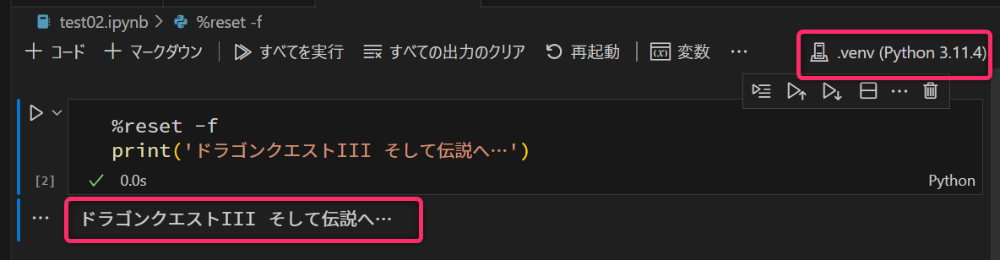
上記スクリーンショットの Python バージョン (3.114.4 の部分)
は、各自の環境に合わせて読み替えてください。
2.0.6 手順6
前回講義で作成した PG1-09 というフォルダは、ディスクを圧迫するので
(約300MB！のサイズがあるので) 削除してください。PG1-09
のなかで、自分が作成したプログラムがあり、残しておきたいものがあれば PG1-10
に移動しておいてください。

PG1-09 を削除する際、Shift を押下しながら Delete
あるいは「削除」を選択すると、ゴミ箱を経由せずに削除すること
ができます。
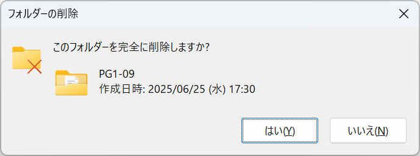
3 GoogleColab にプリインストールされているパッケージの確認
GoogleColab では 主要なPythonライブラリ (Package) が予めインストール されています。Google Colab にインストール済みのライブラリを確認するために、Colab でコードセルを追加して、次のようなコマンドを打ち込んで実行してください。
!pip listColab において ! からはじまる文は Python
プログラムではなく OS (Linux) に対するコマンド として扱われます。
4 pipコマンドを使ったライブラリの追加
pip コマンドを使った Pythonライブラリの追加 について学んでいきます。pip は ピップ と読みます。
pip とはなにか
pip (ピップ) とは、Python の「パッケージ管理システム」のひとつで、Python で書かれたパッケージのインストール／管理を行なうためシステムです。パッケージ (ライブラリ・モジュール) とは 他の人が書いて再利用可能にした Python のコードのこと を指します。これらのパッケージを使用すると、自分ですべてのコードを書く代わりに、他の人が既に書いたコードを利用することができ、開発効率を上げることができます。
本授業では利用しませんが、Python 開発環境の Anaconda (アナコンダ) では conda というパッケージ管理システムが採用されています。なお、pip と conda を併用すると 様々な問題が生じるので注意してください。
近年では、uv という新しい Python のパッケージ管理ツールも注目されています。uv は pip と似た使い方ができる高速なツールで、パッケージのインストールだけでなく、仮想環境やプロジェクト単位の依存関係も管理できます。pip、conda、uv はいずれも Python の開発環境を整えるための道具ですが、混在させると環境が分かりにくくなるため、どのツールで管理しているかを意識することが重要です。
プロンプト例
Python の pip って何ですか。
Python の pip に関連してパッケージってなんですか？ライブラリ？モジュール？とは何が違うのですか？同じですか？
4.1 準備
ローカルPCに構築した「ノートブック環境
(Jupyter環境)」において、コードセルを追加して、次のプログラムをコピペして実行
(Ctrl+Enterを押下) してください。
以下のコードは matplotlib というライブラリを利用して「グラフ」を描画 するプログラムになります。
%reset -f
import matplotlib.pyplot as plt
x = [0, 10,20,30,40]
y = [20,40,30,50,40]
fig,ax = plt.subplots()
ax.plot(x,y,marker='o')
plt.show()実行すると ModuleNotFoundError: No module named 'matplotlib'
という実行時エラーが発生します。このエラーメッセージは、上記の
第02行目 の import に関連して発生しているもので ModuleNotFoundError: ‘matplotlib’ という名前の モジュール
(＝ライブラリ、パッケージ) が見つかりません という意味です。
これは、現在のPython環境 (＝先ほど作成・有効化した仮想環境内) に、matplotlib というライブラリが見つからないために生じているエラー になります。
4.2 現在の開発環境にインストールされているライブラリの確認
念のために「本当に matplotlib が現在のPython環境
(＝venvで構築した仮想環境)
にインストールされていないのか?」を確認してみましょう。
VS Code のターミナル (Ctrl+J で起動) から、次のコマンドを入力して
インストールされているライブラリを一覧表示 してください。
pip list結果が大量出力されます。このなかから matplotlib
の有無を探すのは大変なので、出力結果から mat
という文字を含む行だけを抽出して表示します。
次のコマンドを入力してください。
pip list | Select-String -Pattern "mat"ここで | は「情報1」で学習したように パイプ
と呼ばれる記号です。コマンドライン上で、パイプを command1 | command2
のように使用したときは、command1 の出力を command2
の入力に「パイプする」という意味になります。
プロンプト例
コマンドラインにおける「パイプ」の意味が分かりません。
pip list | Select-String -Pattern "mat"を例に分かりやすく説明してください。
「パイプする」とは、コマンドの実行結果 (文字列の出力) をコンソールに表示するのではなく 別のコマンド対して入力として引き渡す ということを意味します。
ここでは pip list というコマンドの実行結果 (文字列の出力)
を、Select-String -Pattern "mat"
というコマンドに対する入力として与えるという意味になります。
このコマンドの結果は、次のようになります。
(.venv) PS C:\Users\...\PG-10> pip list | Select-String -Pattern "mat"
matplotlib-inline 0.1.7
nbformat 5.10.4この結果から確かに matplotlib は インストールされていないこと
が確認できます。
4.3 pip本体の更新
pipコマンドを使って「Pythonライブラリ」をインストールする際には、まずはじめに pip そのものが最新版であることを確認 する必要があります。以下のコマンドにより、pipのバージョンをチェックし、もし古いバージョンであれば最新版に更新すること (アップグレードすること) ができます。
python -m pip install --upgrade pipもし、現状でpipが最新版であれば、以下のようなメッセージが表示されます ( Requirement already satisfied : 要求は満たされている )。
Requirement already satisfied: pip in c:\users\...\PG1-10\.venv\lib\site-packages (25.1.1)また、最新版でなかった場合は、、以下のようなメッセージが表示され、pipが最新版に更新されます。特に最終行が Successfully となっていることを確認してください。問題があるとエラー関係の表示が出力されます。
Requirement already satisfied: pip in c:\users\...\PG1-10\.venv\lib\site-packages (24.0)
Collecting pip
Downloading pip-24.1.1-py3-none-any.whl.metadata (3.6 kB)
Downloading pip-24.1.1-py3-none-any.whl (1.8 MB)
━━━━━━━━━━━━━━━━━━━━━━━━━━━━━━━━━━━━━━━━ 1.8/1.8 MB 10.5 MB/s eta 0:00:00
Installing collected packages: pip
Attempting uninstall: pip
Found existing installation: pip 24.0
Uninstalling pip-24.0:
Successfully uninstalled pip-24.0
Successfully installed pip-24.1.1このようなアップグレード操作をしておかないと 以降の操作を行なった場合にエラーが発生する可能性があります。この点に注意してください。
4.4 Pythonライブラリのインストール
以下のコマンドで matplot
をインストールすることができます。pip installを実行するとインターネット上の PyPI（パイピーアイと読む、Python Package
Index）という Pythonのパッケージのリポジトリ
から目的のライブラリを検索し、それをローカル環境にダウンロードしてインストールします。
pipによるライブラリのインストールは、スマートフォンにおいて Playストア や AppStore などのリポジトリからアプリをインストール するイメージです。
pip install matplotlib上記のコマンドを実行すると matplotlib
以外にも、依存関係のあるライブラリ (matplotlibの動作に必要な別ライブラリ)
もあわせてインストールされます。インストールには、少し時間がかかります。
完了後、再度 pip list | Select-String -Pattern "mat"
を実行し、実際にインストールができたか確認してみてください。
matplotlib 3.10.3
matplotlib-inline 0.1.7
nbformat 5.10.4上記より、matplotlib のバージョン 3.10.3
が仮想環境にインストールされたことが分かります。
(プロンプト例)
pip install matplotlibを実行しただけなのに、matplotlib以外に大量のライブラリがインストールされてしまいました。ウイルスに感染したのでしょうか？
4.5 動作確認
VSCodeで作成しているノートブックに戻って、再度、セルを実行してください。今度は
ModuleNotFoundError
が発生せず、プログラムが実行され、次のようにグラフが出力されるはずです。
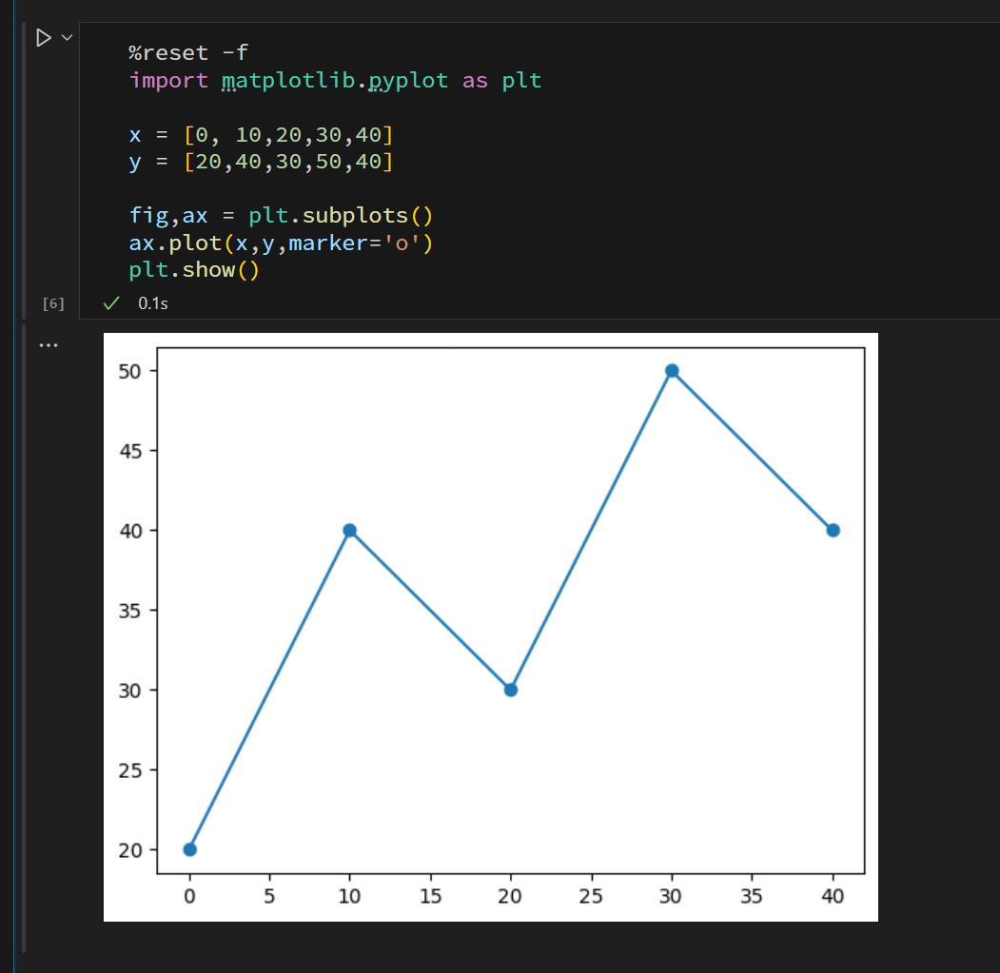
ModuleNotFoundErrorに遭遇したときは
今後、ModuleNotFoundError
が発生した場合は、ここで説明した手順で必要なライブラリをインストールしてください。
5 繰返し構文 (少しだけ発展的な利用)
5.1 繰返し構文の基本
ここまで、繰返し構文としては、次のように range に
1個の引数 (以下の例では 5)
を与えるものを取り扱ってきました。
このプログラムを実行すると、まずは ループ変数である i に
0 が格納された状態でブロック (＝インデントされた範囲)
が実行され、つづいて i に 1
が格納された状態でブロックが実行され・・・という処理が 5
回、つまり 変数 i が 4
となるまで処理が繰返されました。
0
1
2
3
45.2 演習1 ( 目標時間: 3分)
次のプログラムの 第03行目 を書き換えて、下記に示す「期待する結果」が得られるようにしてください。第02行目 を書き換えることは不可とします。
- Colab環境 (ローカル環境PCのJupyter環境を含む) 以外で実行する場合は、
%reset -fを削除してください (ノーマルなPython環境では%reset -fはエラーになります) 。
期待する結果
5
6
7
8
9- 実装例 (解答例) は こちら を参照してください。
5.3 rangeに対して「2つの引数」を与える
「演習1」のような方法で 5 から 9 を得ることはできます。
この方法とは別に range
に「開始値」と「終了値+1」の
2つの引数 を与えることでも同様の処理が可能となります。
range に2個の引数を与えた場合、ループ変数 (上記の例では i)
には「第1引数の値」から「第2引数の値 未満 の値」が順次格納され、つまり、変数 i に 5 から 9
までの整数が逐次格納 されて、ループ処理されます。
5.4 演習2 ( 目標時間: 15分)
range(10,5)のように「第1引数 \(>\) 第2引数」とした場合、どのようになるか。結果について推測したうえで、実際にコードを実行して確認してください。range(-5,5)のように引数に「負数を与えた場合」、どのようになるか。結果について推測したうえで、実際にコードを実行して確認してください。range(0.5,9.5)のように引数に「小数値を与えた場合」、どのようになるか。結果について推測したうえで、実際にコードを実行して確認してください。range(5,20,2)またrange(5,20,4)としてコードを実行し、第3引数の値がどのような意味を持つか を考察し、その考察が正しいものかコードを実行して検証してください。また、rangeの第3引数の意味についてウェブあるいは生成AIで調査してください。range(5,20,-1)またrange(5,20,-2)として実行し、第3引数の値がどのような意味を持つかを考察し、その考察が正しいものかコードを実行して検証してください。
6 繰返し構文 (ループ変数に小数値を使用したい場合)
上記では range の引数により、ループ変数の「範囲
(開始値・終了値) 」や 「刻み幅」
を（ある程度までは）操作できること学びました。しかし、range
では「整数値」しか扱うことができず、小数値をループ変数したい場合
(特に「物理シミュレーション」などの要求)
は、次のようにブロック内で別の変数を用意する必要があります。
次のプログラムを実際に実行して結果を確認してください。
%reset -f
# ループブロックで 0.00 から 1.00 まで
# 0.01 刻みの値を使用したい
for i in range(100+1):
t = 0.01 * i
print(f'{t:.2f}',end=' ')さらに、次のようにすると 0.1 刻みで改行出力されることを確認してください。
%reset -f
for i in range(100+1):
t = 0.01 * i
print(f'{t:.2f}',end=' ')
if i%10 == 0 : # 0.1単位で改行
print('') # 改行上記では、割り算の 余り を求める %
演算子を使用して、一定値に達したときに改行するようにしています。なお、%
演算子については第03回講義で学びました。
プログラミングでは、使用する変数は必要最低限にすること
が望ましいです。上記のような要求は numpy
というライブラリを使うことで解決することができます。
numpy
は数値計算支援用のライブラリで「ナンパイ」もしくは「ナムパイ」と読みます。工学分野では極めて使用頻度が高いライブラリとなります。具体的には
range() の代わりに np.arange()
を使うことで、直接的に小数のループ変数を使用すること ができます。
%reset -f
import numpy as np # numpy を np という省略名で使用
for t in np.arange(0,1.01,0.01):
print(f'{t:.2f}',end=' ')
if t % 0.1 == 0 :
print()実際に実行して結果を確認してください。
6.1 演習3-1 ( 目標時間: 10分)
上記プログラムを実行すると、次のように期待するような位置で改行がされません。
なぜ、このようなことが発生するのか、分析・考察してください。また、どのように書き換えれば、期待するような結果が得られるか考えてコードを修正してください。
0.00
0.01 0.02 0.03 0.04 0.05 0.06 0.07 0.08 0.09 0.10
0.11 0.12 0.13 0.14 0.15 0.16 0.17 0.18 0.19 0.20
0.21 0.22 0.23 0.24 0.25 0.26 0.27 0.28 0.29 0.30 0.31 0.32 0.33 0.34 0.35 0.36 0.37 0.38 0.39 0.40
0.41 0.42 0.43 0.44 0.45 0.46 0.47 0.48 0.49 0.50 0.51 0.52 0.53 0.54 0.55 0.56 0.57 0.58 0.59 0.60 0.61 0.62 0.63 0.64 0.65 0.66 0.67 0.68 0.69 0.70 0.71 0.72 0.73 0.74 0.75 0.76 0.77 0.78 0.79 0.80
0.81 0.82 0.83 0.84 0.85 0.86 0.87 0.88 0.89 0.90 0.91 0.92 0.93 0.94 0.95 0.96 0.97 0.98 0.99 1.00 ヒント (現象の原因) :
tの値とあわせてt % 0.1の値を出力して、考察の材料としてみること。「小数の2進数表現」の問題は何か。2進数では情報2の第03回講義ノートを参照。ある程度、考察してみても理解できなければ、とりあえず、原因追及は諦めて解決する方法を考えてみること。ヒント (現象の解決法):様々な方法があるが、例えば
t % 0.1 == 0の部分書き換えで対応ができる。答え (現象の解決法):例えば
if t*100 % 10 < 0.1 :のように書き換えれば期待する出力が得られる。
中級者向け
次のような実行結果を得るには、どのようにすればよいか考えてみてください (実装して確認してください)。
0.00 0.01 0.02 0.03 0.04 0.05 0.06 0.07 0.08 0.09
0.10 0.11 0.12 0.13 0.14 0.15 0.16 0.17 0.18 0.19
0.20 0.21 0.22 0.23 0.24 0.25 0.26 0.27 0.28 0.29
0.30 0.31 0.32 0.33 0.34 0.35 0.36 0.37 0.38 0.39
0.40 0.41 0.42 0.43 0.44 0.45 0.46 0.47 0.48 0.49
0.50 0.51 0.52 0.53 0.54 0.55 0.56 0.57 0.58 0.59
0.60 0.61 0.62 0.63 0.64 0.65 0.66 0.67 0.68 0.69
0.70 0.71 0.72 0.73 0.74 0.75 0.76 0.77 0.78 0.79
0.80 0.81 0.82 0.83 0.84 0.85 0.86 0.87 0.88 0.89
0.90 0.91 0.92 0.93 0.94 0.95 0.96 0.97 0.98 0.99 6.2 演習3-2 ( 目標時間: 8分)
上記のプログラムの 第02行目 を import numpy as np から
import numpy に変更した場合 (＝np
という省略形を使わない場合)、以降のプログラムをどのように書き換えるべきか。実際にコードを記述して確認せよ。
7 繰り返し構文2 (whileの利用)
ここまでは「繰返し構文」として for を学習してきました。for
を使った繰返し構文は、予め「繰返しの回数」が決まっている場合
に使いやすいものとなっています。
一方で、繰返し回数は不定で、特定の条件が満たされるまで繰返し処理 をしたい場合には while
による繰返し構文が適しています。
while
の一例を示します。次のプログラムをコピペして実行し、その後、その実行結果とプログラムを照らし合わせて内容を理解してください
(重要なポイントになります、読み飛ばさず、確実に理解してください) 。理解できないところは「Python while
初心者向け」などでウェブ検索して解決してください。
%reset -f
import time # 第12行目で time.sleep(3) を使用する準備
import random as r
print('九九の練習プログラムです')
input('はじめるためには [Enter] を押下してください。')
x = 1 # 処理継続フラグを立てる
while x == 1 : # 処理継続フラグ変数 x が 1 である間ずっと (while)
a = r.randint(1,9) # 1～9の範囲のランダムな整数値
b = r.randint(1,9)
print(f'問題：{a} x {b} = ? (3秒後に答えが表示されます)')
time.sleep(3) # 3秒間プログラムを停止
print(f'答えは「{a*b}」でした。')
u = input('つづける場合は [Enter]、終了する場合は 何か文字を入力して [Enter] > ')
if u != '' :
x = 0 # 処理継続フラグを折る
print('お疲れ様でした。')Jupyterでinputを使用する場合の注意
前回の講義でも解説したように、Jupyter環境では input()
に対する入力受付は、画面上部に表示されます。

while では、条件式が成立する間、ブロック内 (＝インデントされている第09行目～第16行目の範囲)
の処理が継続されます。条件式は if と同じように while x < 10 : や
while -10 <= x <= 10 :、while x != y :
のように記述することができます。
while 構文では、「初回」も条件式が成立するかチェックされます。そのため、条件の与え方によっては、1回もループ内部の処理が実行されない可能性があります。
7.1 演習4 ( 目標時間: 5分)
while
による繰返し構文を利用して、次のような値を出力するプログラムを作成してください。
5 6 7 8 9 10 11 12 13 14 15 ヒント: 次のプログラムを参考にしてください。
7.2 無限ループ
while 1 : または while True :
のようにすると「無限ループ」となります。無限ループから抜けだすためには
break 文を使用します。
次のプログラムをコピペして実行し、その後、その実行結果とプログラムを照らし合わせて内容を理解してください。
%reset -f
import random as r
import time
wallet = 20_000 # 所持金
bet = 300 # ガチャ1回の費用
n = 1
# SSRゲット or 破産するまでの無限ループ
while True :
print(f'{n}回目の{bet}円ガチャに挑戦',end='')
wallet -= bet #「wallet=wallet-bet」と同じ
for i in range(3):
time.sleep(0.5)
print('.',end='')
x = r.choices(['R','SR','SSR'],weights=(75,20,5))[0]
print(f'{x}を入手! 残金は{wallet:,}円{"っ"*r.randint(1,5)}!')
if wallet < bet or x == 'SSR' :
break
n += 1 # 「n=n+1」と同じ 7.3 無限ループに陥った場合は・・・
Colab (Jupyterを含む) において無限ループ処理を実行してしまったときは、以下のように「■停止ボタン」を押下してください。
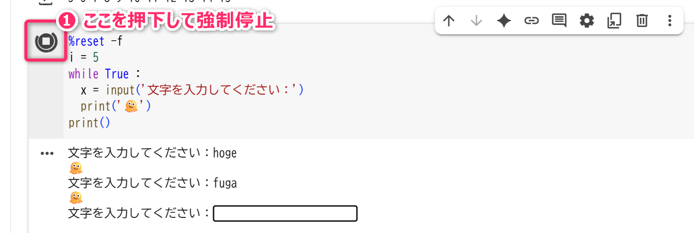
また、コンソール環境で無限ループに陥ったときは、コンソールに Ctrl+C
を入力して停止させることができます (この場合、Ctrl+C
は「コピー」ではなく「強制停止」のショートカットキーになります)。
中級者向け：正常終了させるための例外処理
停止ボタンを押下したり、Ctrl+CP を入力すると
KeyboardInterrupt
というエラー（例外）が発生します。これが適切に捕捉されないと、プログラムは以下のように異常終了となります
(スタックトレースが出力されて、見た目が美しくありません)。
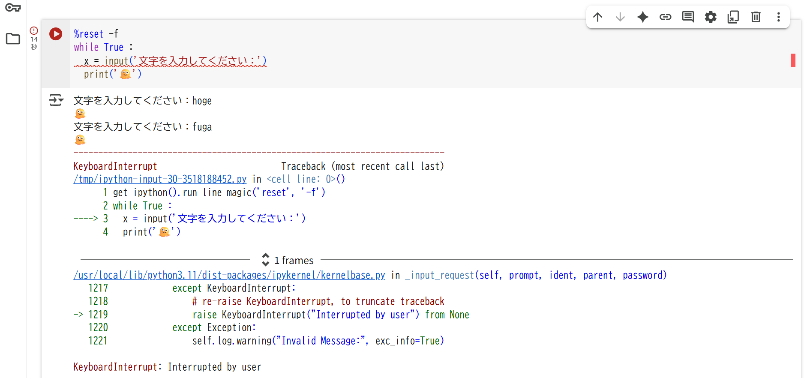
これを回避するためには、以下のような例外処理を記述します。これにより、スタックトレースを吐き出すことなく正常終了としてプログラムを停止させることができます。
%reset -f
try:
while True :
x = input('文字を入力してください：')
print('🫠')
except KeyboardInterrupt:
print('プログラムを終了します')
print()(プロンプト例)
プログラミングの文脈で「スタックトレース」とは何ですか？
7.3.1 補足: random.choices
random.choices は、次のように結果を必ず リスト
として返してきます。リストではなく、リストの中身が必要な場合は []
で要素を取得してください。
%reset -f
import random as r
# キーワード引数 k=4
x = r.choices(['R','SR','SSR'],weights=(75,20,5),k=4)
print(x) # => ['R', 'SR', 'R', 'R']
# キーワード引数 k=2
x = r.choices(['R','SR','SSR'],weights=(75,20,5),k=2)
print(x) # => ['R', 'R']
# キーワード引数 k=1
x = r.choices(['R','SR','SSR'],weights=(75,20,5),k=1)
print(x) # => ['R']
# キーワード引数 kを省略（k=1）と同じ
x = r.choices(['R','SR','SSR'],weights=(75,20,5))
print(x) # => ['R']
# キーワード引数 kを省略（k=1）と同じ
x = r.choices(['R','SR','SSR'],weights=(75,20,5))
x = x[0] # xはリストなので x[0] でゼロ番目の要素を取得
print(x) # R
# 省略形
x = r.choices(['R','SR','SSR'],weights=(75,20,5))[0]
print(x) # R7.4 演習5 ( 目標時間: 15分)
自キャラと敵キャラによる「1対1の自動バトル (交互に攻撃して決着がつくまで戦う系)」を実況するようなプログラムを作成してください。なお、詳細に作りこむととキリがないので、授業中は15分程度で次のセクションに移動してください。
- ここでは
whilebreakを使用することを期待しています。
作成例
勇者ヨシヒコの前に赤色スライムがあらわれた。
勇者ヨシヒコのHP「50」、スライムのHP「8」。
勇者ヨシヒコの攻撃、スライムに3のダメージ!! 赤色スライムの HP 8 -> 5
スライムの攻撃、勇者ヨシヒコに2のダメージ!! 勇者ヨシヒコの HP 50 -> 48
勇者ヨシヒコの攻撃、スライムに3のダメージ!! 赤色スライムの HP 5 -> 3
スライムの攻撃、勇者ヨシヒコに・・・8 リスト操作の負荷量の比較
前々回の講義ではリストを初期化する方法
(例えば [0]*10 など) や、リストに要素を追加する方法 (例えば
append や insert メソッドなど) を学習しました。
基本的に、リストに順次要素を追加する方法は、いわゆる「重たい処理」となります。あらかじめリストの長さが決まっているケースでは、その長さのリストを作成しておき、そこに値を書き込んでいくほうが高速かつ効率的な処理となります。
例として、長さが「1000」で、その要素として先頭から 0、1、2、…、999
という数値が格納されるリストを生成すること考えます。この処理を次の3つの方法で実行して、それに要する時間を
%%timeit で計測してみます。
%%timeit は第07回講義でも紹介していますが、セル単位の実行時間を計測するマジックコマンド (Colab.環境専用)
です。なお、%%timeit のセルのなかでは %reset -f や
print は使わないようにしてください。
次の3つの処理の処理時間を比較します。Colab.環境で上記の各プログラムを実行して、その実行時間を比較してみてください。
- 初期値が 0 で、要素数 1000 のリストを作成する (
arr=[0]*1000) 。その後、for構文で、先頭から順番に要素の値を書き換えていく。以下のp1.py参照。 - 要素数が 0 の空のリストを作成する (
arr=[])。その後、for構文のなかで、appendでリストの「末尾」に順次要素を追加していく。以下のp2.py参照。 - 要素数が 0 の空のリストを作成する (
arr=[])。その後、for構文のなかで、insertでリストの「先頭」に順次要素を追加していく。以下のp3.py参照。
特に insert を使ってリストの途中 (末尾以外)
に要素を追加する処理は、処理時間が長くなることが確認できると思います。
9 リスト要素の削除
リストは append や intsert
などのメソッドにより「要素の追加」が可能でした。これに対して pop
や remove などのメソッドにより「要素の削除」が可能です。
リストの要素削除について動作を確認するために、次のようなリストを考えます。実行して結果を確認してください。
%reset -f
arr = list('ABCDBBEF') # 文字列からリストを作成可能
print(arr) # => ['A', 'B', 'C', 'D', 'B', 'B', 'E', 'F']
print(len(arr)) # => 8上記のリスト arr に対して要素削除の操作を行ないます。
pop
は「指定したインデックスの要素」を取り除き、その部分を「前詰め」します。例えば、arr
から 'C' を取り除きたいときは、次のプログラムのように、そのインデックスである
2 を pop の引数に指定します。pop メソッドには
戻り値 があり、取り除いた値を受けとることもできます。
実際に次のプログラムを実行して、結果を確認してみてください。
%reset -f
arr = list('ABCDBBEF')
p = arr.pop(2)
print(arr) # => ['A', 'B', 'D', 'B', 'B', 'E', 'F']
print(len(arr)) # => 7
print(f'p={p}') # => p=C上記の例では、第03行目 で変数 p で arr.pop(2)
の結果を受け取っていますが、これは、次のように受け取らないことも可能です。
上記のプログラムでは、取り除きたい要素 'C' のインデックスを 2
のように数値で直接的に指定しました。しかし、実施にはそのようなケースは少なく、前々回で学習した
index メソッドと組み合わせて利用します( index
は指定の要素が「リストの何番目に存在するかを調べるメソッドでした)。
つまり、次のように利用します。
これは、さらに次のように変数 idx
を省いて記述することができます。可読性が損なわれない範囲で、不要な変数は省くことが望ましいです。
popの引数に負数を与えたとき、どのようになるか。結果について推測したうえで、実際にコードを実行して確認してください。
9.1 remove による要素の削除
remove
では、インデックスではく、削除したい「要素そのもの」を指定してリストから取り除くことができます。先ほどと同様に
'C' を削除したい場合は次のようにします。
- リストに存在していない要素 (たとえば
Zなど) をremoveの引数に与えたとき、どのようになるか。結果を推測したうえで、実際に結果を確認してください。 removeの戻り値はどのようになるか。結果について推測したうえで、実際にコードを実行して確認せよ。
remove では、リスト内で見つかった最初の要素のみ (1個のみ)
を削除します。全てを削除したい場合は while
などと組み合わせて remove 使用する必要 があります。
次のプログラム実行し、その結果を確認してください。
9.2 演習6 ( 目標時間: 10分)
次のプログラムが意図する動作をするようにコードを追加してください。
- ここでは
whileを使用することを期待しています。 - ここではリストの
removeメソッドを使用することを期待しています。 - リストのなかに特定の要素が存在するかの条件式は
inで与えることができました。詳しくは第08回講義資料で確認してください。ifに設定することができる条件式 (例えばinを含む条件式) は、whileに対する条件式としても使うことができます。
%reset -f
import random as r
RED = '\033[31m'
BLUE = '\033[34m'
RESET = '\033[0m'
target = 'やくそう'
items = ['どうのつるぎ','やくそう','どくけしそう','ぬののふく', 'やくそう', 'やくそう', 'かわのたて']
print(f'勇者ヨシヒコのもちもの ({len(items)}) : {BLUE}',end='')
print(*items, sep=' ') # アンパック(後述)
print(RESET)
print(f'{RED}勇者ヨシヒコはパルプンテを唱えた。なんと全ての「{target}」が粉々に砕け散った💥💥{RESET}')
print()
#【意図する動作】
# ここに items からすべての target を取り除くような処理を記述する
print(f'勇者ヨシヒコのもちもの ({len(items)}) : {BLUE}',end='')
print(*items, sep=' ')
print(RESET)リストのアンパック
リストを関数の引数として与える場合、先頭に「アスタリスク」をつけて「アンパック (展開)」という処理を施すことができます。これにより、次のようなことができます。
%reset -f
items = ['どうのつるぎ','やくそう','どくけしそう','ぬののふく']
print(*items, sep='\n') # itemsの頭に「*」を付けた。また sep 引数を設定このとき、上記の 第03行目 は、次のような文と同じ意味を持ちます。
つまり、リストをアンパックすると「リスト内の要素を個別の引数として関数に与えること」が可能になります。もし、アンパックを使わずに同じ処理をする場合、以下のように
for を利用する必要があります。
10 宿題
次回は、次のような「斜方投射」の簡易シミュレーションを扱います。斜方投射 (基礎物理学) について復習し、また、下記のプログラムについて読解を試みてください (分からなくても60分は費やしてください) 。この宿題は、提出は要求しません。
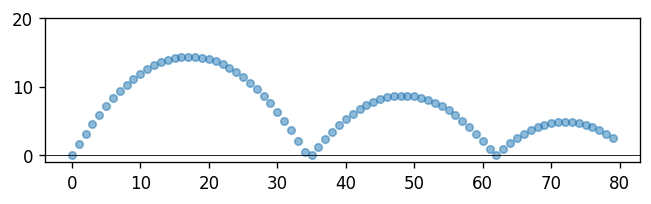
ある時刻において位置 \(x (\mathrm{m})\)、速度 \(v(\mathrm{m/s})\) の物体がある。この物体について、微小時間 \(dt\) 秒後の位置を求めよ。答え：\(x+v\cdot dt\)
ある時刻において速度 \(v(\mathrm{m/s})\)、加速度 \(-g(\mathrm{m/s^2})\) の物体がある。この物体について、微小時間 \(dt\) 秒後の速度を求めよ。答え：\(v-g\cdot dt\)
%reset -f
import math
import numpy as np
import matplotlib.pyplot as plt
# パラメータ設定
v0 = 20.0 # 初速度(m/s)
theta = 60 # 水平方向から上方にθ(deg)
g = 9.8 # 重力加速度m/s^2
# シミュレーション
dt = 0.1 # 位置計算の時間間隔
iter = 80 # シミュレーション繰返し回数
theta = math.radians(theta) # deg -> rad
arr_x=[0]*iter # X位置を格納するリストの初期化
arr_y=[0]*iter # Y位置 〃
arr_x[0] = x = 0 # Xの初期位置
arr_y[0] = y = 0 # Yの 〃
vx = v0 * math.cos(theta) # X成分の初期速度
vy = v0 * math.sin(theta) # Y成分 〃
# シミュレーション
for i in range(1,iter):
vy = vy - g * dt # Y方向の速度更新
x = x + vx * dt # X位置の計算
y = y + vy * dt # Y位置 〃
# 地面衝突の反発 (バウンド) の処理
if y < 0:
y = 0
vy = -vy * 0.8 # 反発係数
arr_x[i] = x
arr_y[i] = y
# 可視化（現状でここから先は理解不要）
fig,ax = plt.subplots(dpi=120)
ax.scatter(arr_x,arr_y,marker='o',s=20,alpha=0.5)
ax.axhline(0,c='black',lw=0.5)
ax.set_aspect('equal', adjustable='box')
ax.set_ylim(-1,20)
plt.show()11 課題04の解答例
11.1 問題
FC版DQ3 (ファミコン版のドラゴンクエスト3)
の武器を扱った「100連ガチャ」のシミュレータを作成したい。ガチャにより排出される武器は
item_names_str
でカンマ区切りで与えられる全33種の武器である。また、その排出比は
item_p_str でカンマ区切りで与えた数値となっている。
ここでの排出比とは・・・例えば「ひのきのぼう」「こんぼう」「どうのつるぎ」の全３種を仮定し、その排出比が「\(10\)」「\(5\)」「\(2\)」であれば、「ひのきのぼう」があたる確率は \(10/(10+5+2)\)、「こんぼう」があたる確率は \(5/(10+5+2)\)、「どうのつるぎ」があたる確率は \(2/(10+5+2)\) のように考えること。
%reset -f
item_names_str = 'ひのきのぼう,こんぼう,どうのつるぎ,せいなるナイフ,くさりがま,とげのむち,まどうしのつえ,てつのやり,どくばり,てつのつめ,はがねのつるぎ,てつのオノ,あまぐものつえ,いかづちのつえ,さざなみのつえ,さばきのつえ,おおばさみ,ゆうわくのけん,りりょくのつえ,おおかなづち,はやぶさのけん,ゾンビキラー,ドラゴンキラー,くさなぎのけん,ガイアのつるぎ,ふぶきのつるぎ,いなづまのけん,まじんのオノ,らいじんのけん,もろはのつるぎ,はかいのつるぎ,おうごんのつめ,おうじゃのけん'
item_p_str = '50,50,50,40,40,35,30,30,25,20,20,20,10,10,10,10,10,10,10,10,5,5,5,4,3,3,2,2,2,2,2,2,1'上記の設定に基づき100連ガチャのシミュレーションを実行し、次のような出力を得たい。
100連ガチャの結果、以下のアイテムを獲得しました。
ひのきのぼう ... 8個
こんぼう ... 8個
どうのつるぎ ... 9個
せいなるナイフ ... 8個
くさりがま ... 11個
とげのむち ... 7個
まどうしのつえ ... 5個
てつのやり ... 7個
どくばり ... 6個
てつのつめ ... 5個
はがねのつるぎ ... 4個
てつのオノ ... 3個
あまぐものつえ ... 2個
いかづちのつえ ... 1個
さざなみのつえ ... 6個
さばきのつえ ... 2個
ゆうわくのけん ... 3個
りりょくのつえ ... 2個
おおかなづち ... 1個
ゾンビキラー ... 1個
まじんのオノ ... 1個この要求を満たすことができるPythonプログラムを考え、実装せよ。
11.2 解答例①
%reset -f
%reset -f
import random as r
item_names_str = 'ひのきのぼう,こんぼう,どうのつるぎ,せいなるナイフ,くさりがま,とげのむち,まどうしのつえ,てつのやり,どくばり,てつのつめ,はがねのつるぎ,てつのオノ,あまぐものつえ,いかづちのつえ,さざなみのつえ,さばきのつえ,おおばさみ,ゆうわくのけん,りりょくのつえ,おおかなづち,はやぶさのけん,ゾンビキラー,ドラゴンキラー,くさなぎのけん,ガイアのつるぎ,ふぶきのつるぎ,いなづまのけん,まじんのオノ,らいじんのけん,もろはのつるぎ,はかいのつるぎ,おうごんのつめ,おうじゃのけん'
item_p_str = '50,50,50,40,40,35,30,30,25,20,20,20,10,10,10,10,10,10,10,10,5,5,5,4,3,3,2,2,2,2,2,1,1'
item_names = list(item_names_str.split(',')) # 文字列→リスト
item_p = list(map(int, item_p_str.split(','))) # 文字列→リスト
assert len(item_names) == len(item_p) # 2つのリストの長さが同じであることを確認
item_counts = [0]*len(item_names) # 結果を格納する0で初期化したリスト
n = 100
for t in range(100):
item = r.choices(item_names,weights=item_p,k=1)[0]
index = item_names.index(item)
item_counts[index]+=1
print(f'{n}連ガチャの結果、以下のアイテムを獲得しました。')
for i in range(len(item_names)):
if item_counts[i] != 0: # 1個以上獲得していれば
print(f'{item_names[i]} ... {item_counts[i]}個')11.3 解答例②
%reset -f
import random as r
item_names_str = 'ひのきのぼう,こんぼう,どうのつるぎ,せいなるナイフ,くさりがま,とげのむち,まどうしのつえ,てつのやり,どくばり,てつのつめ,はがねのつるぎ,てつのオノ,あまぐものつえ,いかづちのつえ,さざなみのつえ,さばきのつえ,おおばさみ,ゆうわくのけん,りりょくのつえ,おおかなづち,はやぶさのけん,ゾンビキラー,ドラゴンキラー,くさなぎのけん,ガイアのつるぎ,ふぶきのつるぎ,いなづまのけん,まじんのオノ,らいじんのけん,もろはのつるぎ,はかいのつるぎ,おうごんのつめ,おうじゃのけん'
item_p_str = '50,50,50,40,40,35,30,30,25,20,20,20,10,10,10,10,10,10,10,10,5,5,5,4,3,3,2,2,2,2,2,1,1'
item_names = list(item_names_str.split(',')) # 文字列→リスト
item_p = list(map(int, item_p_str.split(','))) # 文字列→リスト
assert len(item_names) == len(item_p) # 2つのリストの長さが同じであることを確認
items = r.choices(item_names,weights=item_p,k=100)
for item in set(items):
print(f'{item} ... {items.count(item)}個')